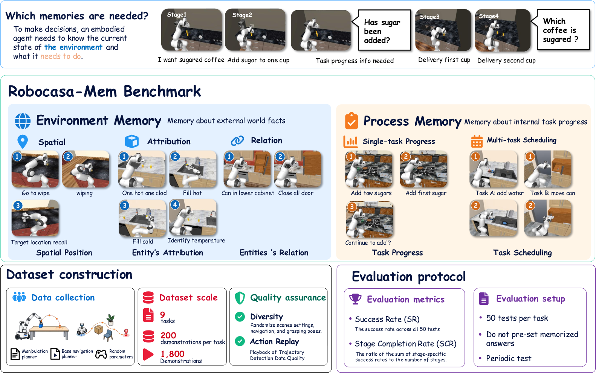
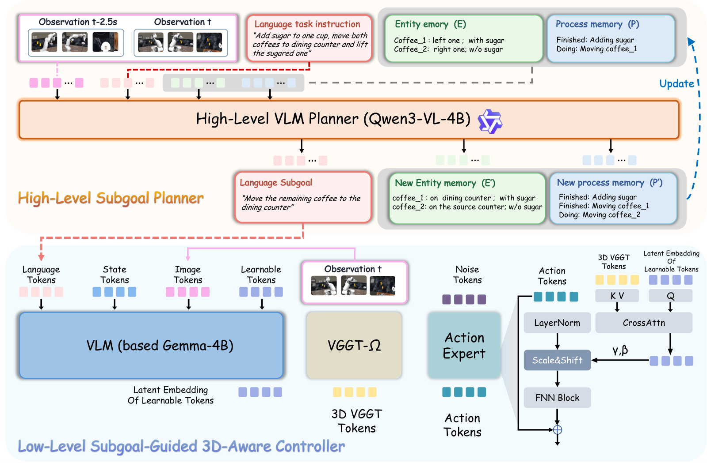

RoboCasa-Mem: Benchmarking Environment and Process Memory in Long-Horizon Mobile Manipulation
本文最有价值的设计是让历史信息决定正确答案，再按机器人实际做过的动作评分。 这比用任务长度代替记忆需求更直接。HMAP 基线在隐藏属性回忆上有清楚收益，但过程跟踪和多任务调度仍很弱；总体提升不能概括为五类记忆都获得改善。
1. 背景信息
- 作者与团队：Sihang Chen 等；中国科学技术大学为主要团队，另有同济大学、香港中文大学、安徽大学、南京大学作者。
- 版本：2026-11-04 的 arXiv v1，17 页，预印本；本笔记未确认会议录用。
- 材料：官方全文、PDF、代码。已核对正文、任务规范、Table 3–7 和训练附录；未运行仿真、训练策略或验证代码发布的完整性。
2. 关键问题：糖已经溶了，机器人怎么知道哪杯咖啡加过糖？
贯穿案例是论文的 SweetCup。 机器人准备一杯加糖、一杯不加糖的咖啡，搬运两杯之后，再选出加过糖的那杯。糖溶解后，当前图像不能可靠地揭示这一属性。前面若给左杯加糖，最后应选左杯对应的对象；若给另一杯加糖，正确答案也应改变（§3.1、Appendix A）。
这比“动作很多”更接近记忆的必要条件：不同历史可以产生相似的当前观测，却要求不同决策。原文 Eq. 1 将其理想化为：
$x$ 是任务指令，$h_t$ 是交互历史，$o_t$ 是当前观测，$\mathcal G_q^\star$ 是某个语义问题 $q$ 的可接受回答集合。直觉是：只看当前画面，无法同时答对这两种历史。 作者把它作为任务设计准则，并未要求每组场景逐像素完全相同，也未证明所有视觉捷径都已排除。

图源：原文 Fig. 1。上方的咖啡例子贯穿两类信息：环境里“哪杯有糖”，过程里“糖是否已加、哪杯已搬”。长时序只是这些信息可能丢失的条件。
3. 关键方法：动态答案、结构化记忆与几何控制分别解决不同问题
3.1 评分跟随实际历史，避免固定目标答案
Behavior-Conditioned Evaluation 允许机器人自行决定给哪一杯加糖。评估器从实际轨迹记录这个选择，最后检查它是否选中了同一杯，而非预先规定“左杯才是答案”。MilkMatch 同样按真实拿取顺序定义第一盒、第二盒，并核对它们与来源托盘的颜色关系（§3.4、Appendix A）。
这样既允许多条合法路径，也减少背下固定目标的捷径。但若策略总给固定一侧加糖、始终采用同一顺序，仍可能形成稳定策略；因此动态评估是必要改进，不能单独证明策略使用了历史。区分这两者需要对历史或目标分配做额外控制。
3.2 HMAP 如何记住并选出加糖杯
HMAP 分为高层符号记忆规划器和低层几何增强 VLA。沿 SweetCup 可以把信息流写清（§4、Fig. 2）：
- 观察变化：高层读取当前与 50 个控制步前的多视角图像、总任务，以及上一轮实体记忆和过程记忆。在 20 Hz 记录频率下，两组观测相隔 2.5 秒。
- 更新持久状态：实体记忆保存“哪杯加了糖、现在在哪里”；过程记忆保存“加糖已完成、第一杯已搬、第二杯待搬”。之后即使看不出糖，先前确认的属性仍可保留。
- 输出当前子目标：例如 Fig. 2 中的“把剩下的一杯移到餐台”。记忆递归传给下一次高层调用，低层只接收当前子目标及其常规任务输入。
- 执行动作：低层根据指令、子目标、当前图像和机器人状态生成动作。它不承担重读全部长期历史的职责。
- 再次规划：新的观测更新位置和进度；最后选杯时，实体记忆中的加糖身份应决定目标。这是模型设计预期，不能据此假定每次记忆写入都正确。
高层使用 Qwen3-VL-4B-Instruct，由示范轨迹离线生成的结构化标注监督训练；它不是未经训练、只拼接一段记忆提示词的通用 VLM。核心递推为原文 Eq. 2：
其中 $e_k,p_k,g_k$ 分别为实体记忆、过程记忆和可执行子目标，$c$ 为固定提示。两帧帮助识别近期变化，递归记忆承载更早的信息；只增加两帧本身并不能覆盖整个任务历史。

图源：原文 Fig. 2。上半部更新两类记忆；下半部用任务条件化 query 从当前几何 token 中取信息，再以 scale/shift 调制动作网络。几何编码器处理的是当前多视角观测，没有建立跨回合的三维长期地图。
低层基于 $\pi_{0.5}$，加入冻结的 VGGT-$\Omega$。8 个可学习 query 在视觉—语言—状态流中获得任务上下文，再通过 cross-attention 检索几何特征，生成动作专家各层的缩放和平移量。这样能按当前子目标选择几何信息，而非无差别拼接所有几何 token。规划器与控制器分开训练，控制器沿用 flow-matching 目标（§4.2、Appendix C）。
实现细节仍不足以直接复现。 Appendix C 明确缺少 FillAndRetrieve 的训练预算、优化器、LoRA、检查点选择及部分任务配置；重规划间隔只对部分任务给出。图 2 将低层标为 Gemma-4B，正文使用 PaliGemma/$\pi_{0.5}$ 描述，具体 backbone/checkpoint 对应关系仍需代码确认 [?]。不能把方法示意当作完整运行配置。
4. 数据与指标：既看最终成功，也看失败发生在哪一步
九项任务按主要记忆需求分组：环境记忆包括位置、属性、实体关系；过程记忆包括单任务进度和多任务调度。每个任务用规则专家收集 200 条成功示范，共 1,800 条；专家结合机械臂运动规划与移动底盘闭环控制，随机化物体位置、外观、顺序和部分任务参数。标准策略输入不含专家内部任务状态、成功标志等特权信息（§3.3、Appendix B）。
记录接口为三路 $224\times224$ RGB、37 维机器人状态、13 维动作，频率 20 Hz。各方法在同一批示范上训练，每任务用相同的 50 个留出场景种子测试。对照包括 ACT、Diffusion Policy、$\pi_{0.5}$ 和 MemER-style；后者与 HMAP 使用同一高层模型和低层骨干，但记忆训练不同，宜称“本文实现的 MemER-style 对照”，不等同于原方法的所有配置。
- SR：整项任务最终满足语义成功条件的比例。
- SCR：预定义阶段完成率的均值，反映走到哪里。
一般阶段要求先完成前置阶段。SugarCount 是分母需要特别处理的例外：只有要求至少两块糖的回合才纳入“第二次加糖”阶段，各阶段适用回合集合不同。因此其阶段率未必递减，不能直接用后阶段率除以前阶段率解释条件成功率（Appendix B）。
5. 关键证据：收益集中在哪里，能否归因于记忆？
5.1 主结果支持隐藏属性回忆，尚未解决过程调度
Table 3 报告 HMAP 九任务宏平均 SR 为 24.2%，$\pi_{0.5}$ 为 16.2%，提高 8.0 个百分点；表内保留两位小数为 0.24 与 0.16。分任务结果更能决定该如何理解这个提升：
| 任务 | 主要需求 | $\pi_{0.5}$ SR | HMAP SR | 应看到的现象 |
|---|---|---|---|---|
| PutBackCup | 原位置回忆 | 0.68 | 0.70 | 最终成功接近 |
| SweetCup | 加糖属性 | 0.04 | 0.10 | 有改善，绝对成功仍低 |
| TempReport | 热/冷水属性 | 0.22 | 0.86 | 最大收益来源 |
| CanRecall | 物体—柜子关系 | 0.00 | 0.00 | 都未完成 |
| MilkMatch | 来源—目标颜色 | 0.12 | 0.16 | 小幅改善 |
| DrawerSearch | 搜索和计数进度 | 0.12 | 0.08 | HMAP 更低 |
| SugarCount | 加糖次数 | 0.28 | 0.28 | 无提升 |
| HeatAndInspect | 加热与检查交错 | 0.00 | 0.00 | 都未完成 |
| FillAndRetrieve | 接水与取物交错 | 0.00 | 0.00 | 都未完成 |
按表中数值自行计算，去掉 TempReport 后，其余八项的平均 SR 提升只有 1.0 个百分点。这不削弱温度回忆结果，但显著收窄“记忆增强有效”的覆盖范围。HeatAndInspect 的 SCR 从 0.32 到 0.50，说明执行进度增加，仍不能表述为成功恢复了两个未完成任务。
5.2 分阶段结果接近记忆决策，但还混有执行能力
回到 SweetCup，Table 6 中两杯均搬完的比例为 0.18 与 0.22，最终选对比例为 0.04 与 0.10。因此在到达选杯阶段的回合中，成功率约为 22% 与 45%。TempReport 对应的最终温度报告条件成功率约为 41% 与 90%（§5.2、Appendix B）。它们比总 SR 更接近“此前信息是否被用上”。
但到达该阶段的回合是各策略自己筛出来的，难度分布未必相同；“选对并操作完成”的谓词也可能包含控制错误。分阶段分析有助定位，尚未完全隔离纯记忆收益。
5.3 单任务消融支持组件互补，归因仍不完整
Table 5 在简化的 SingleMilkMatch 上逐步加入规划器、几何调制和任务条件化 query：
| 配置 | 抓取 | 移动并放置 | 放入正确容器 |
|---|---|---|---|
| $\pi_{0.5}$ | 0.70 | 0.60 | 0.20 |
| + Planner | 0.66 | 0.50 | 0.34 |
| + VGGT-$\Omega$ | 0.70 | 0.64 | 0.40 |
| 完整 HMAP | 0.74 | 0.56 | 0.46 |
这些是累计阶段率。规划器加入后，放置率降低而正确容器成功率提高，支持它改善目标选择；完整模型的正确放置条件比例为 $0.46/0.56\approx0.82$。但“加规划器”同时加入子任务分解、额外模型和记忆监督，不能单独归因于实体/过程记忆划分；逐步添加也不是完整的正交消融。VGGT 加入后的某阶段改善，没有在完整模型上处处保留。
5.4 真实机器人结果是小规模佐证
真实实验在 AgileX Cobot Magic 上做物体搬运：记住来源容器颜色，转身后放到同色目标容器。使用 100 条示范，Table 4 报告每方法 10 次测试，HMAP 最终正确 8/10，$\pi_{0.5}$ 为 2/10；两者抓取均为 10/10，移动并放置为 9/10 与 10/10。差异集中在目标选择，和仿真结果相容，但只有一个真实任务，不能推广为开放家庭场景的可靠性结论。HTML 版本该段的交叉引用错位，此处依据 PDF 正文和表题的 Table 4。
6. Insights
最该复用的是“相似现状、不同历史、不同答案”的配对设计。 当前评估允许策略自己选择历史，因此仍可能形成固定顺序。一个更强的诊断实验是固定当前观察与动作执行器，只交换两条合法历史或记忆状态，检查选杯是否相应改变；再设正确记忆、删除记忆、打乱记忆三个条件。这样才能判断策略是否真的依赖了被声称的历史信息。
过程记忆的瓶颈可能在状态更新与任务切换。 两项调度都未成功，而 HMAP 已经有 pending-obligation 字段。继续扩大记忆容量未必解决问题。我会分别提供真值任务状态、真值下一子目标和稳定低层控制，观察哪种替换恢复成功；这能区分记错进度、选错下一步和执行不了。
现有成功示范实验没有验证错误记忆的修正能力。 高层记忆一旦把“尝试加糖”误写成“已经加糖”，后面即使记得很牢也会选错。数据只保留成功轨迹，论文没有验证失败动作、重复尝试和回退后的记忆修正。加入受控失败与恢复示范，并测错误状态持续时间，比只报告更高 SR 更能检验记忆更新是否可靠。
7. 连接与发现
- Long-Term-Memory-for-VLA-Based-Agents-in-Open-World-Task-Execution-ChemBot双层记忆与进度控制 — 都把持久任务状态交给高层、短技能交给 VLA；RoboCasa-Mem 更明确控制历史依赖，ChemBot 的进度交接则提供另一种分析任务切换失败的入口。